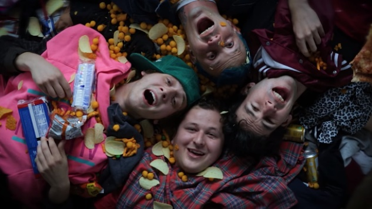

The Frights Fan Page

The Official Frights Website
Bio
From San Diego, California, the Frights started as a surf-grunge band. The band was formed in 2012 with
Mikey Carnevale (lead vocals, rhythm guitar), Richard Dotson (bass guitar, backing vocals), Marc Finn (drums),
and Jordan Clark (lead guitar, backing vocals). They have since developed into a more rock style.
Studio Albums
- The Frights - (2013)
- You Are Going to Hate This - (2016)
- Hypochondriac - (2018)
- Everything Seems Like Yesterday - (2020)
Most played songs on Spotify
|
Song Title
|
Amount of Plays (As of 3/5/22)
|
|
"Tongues"
|
20,319,273
|
|
"You Are Going to Hate This"
|
22.660,004
|
|
"Tungs"
|
39,858,964
|
|
"Crust Bucket"
|
11,034,733
|
|
"Kids"
|
7,895,013
|
Favorite Song
"Crust Bucket"